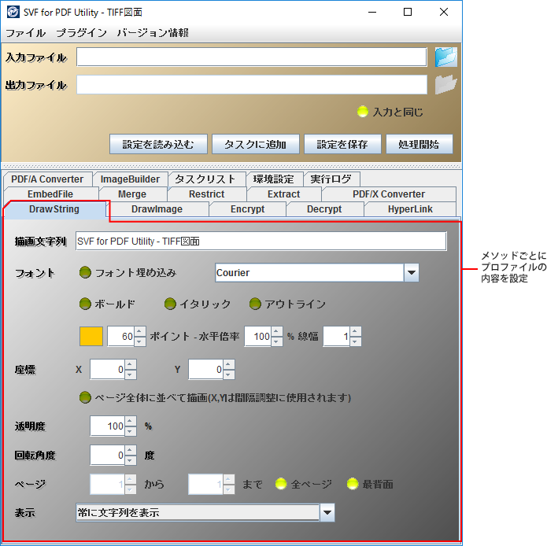

3.4.2. ユーティリティGUIでプロファイルを作成する
ユーティリティGUIのウィンドウは、メソッドごとにタブで分かれて表示されます。設定できるメソッドは12種類で、メソッドごとに異なるプロファイルとして保存します。また、同じメソッドでも異なる設定内容の場合には、別ファイルとして作成して保存できます。

事前条件
ユーティリティGUIを起動していること。
手順
プロファイルは、次の手順で作成します。
設定するメソッドのタブをクリックします。または［プラグイン］メニューから選択します。
メソッドは、次の12種類が用意されています。
メソッド
説明
DrawString
PDFファイルの指定されたページに、任意の文字列を描画します。
DrawImage
PDFファイルの指定されたページにイメージを描画します。
Encrypt
PDFファイルを暗号化します。このメソッドは、そのほかのすべてのメソッド処理が終了した後に一度だけ実行してください。
Decrypt
暗号化PDFを復号化します。
HyperLink
PDFファイルの指定されたページにリンクを設定します。
EmbedFile
PDFファイルにファイルを埋め込みます。
Merge
PDFファイルをマージします。
Restrict
PDFファイルの閲覧制限を設定します。
Extract
PDFファイルからページを抽出します。
PDF/XConverter
PDFファイルをPDF/X形式に変換します。
PDF/AConverter
PDFファイルをPDF/A形式に変換します。
ImageBuilder
TIFFファイルからPDFファイルを作成します。このプロファイルはユーティリティGUIから作成できません。「プロファイルの詳細」を参照してください。
プロファイルを作成するメソッドの入力項目を設定します。
詳細は、「メソッドのGUI設定項目」を参照してください。
［設定を保存］ボタンをクリックします。
プロファイルを保存するダイアログが表示されます。
参考
設定した内容をプロファイルとして保存すると共に、タスクリストにも登録したい場合は、［タスクに追加］ボタンをクリックします。［XXXXのプロファイルを保存］ダイアログが表示されます。プロファイルとして登録すると、同時にタスクリストにもプロファイルが登録されます。
保存先ディレクトリとファイル名を指定して、［XXXXのプロファイルを保存］ボタンをクリックします。
プロファイルが保存されます。
必要に応じて、同様の手順でプロファイルを作成して保存します。
作成したプロファイルを変更したい場合は、該当するメソッドのタブを選択した状態で［設定を読み込む］ボタンをクリックします。
プロファイルに設定されている内容がウィンドウの各項目の値に表示されますので、必要に応じて変更し、再度プロファイルとして保存します。
注意
プロファイルには、作成時に使用したGUIのプラグインバージョン（PluginVersion=x.x.x）が書きこまれます。［環境設定］の［プロファイルのバージョンをチェックする］がオンの場合は、GUIでプロファイルを読み込む際に、プロファイルを作成したGUIのプラグインバージョンと読み込むGUIのプラグインバージョンが同じバージョンか確認されます。異なるプラグインバージョンの場合は、エラーが表示されて読み込みできません。読み込むGUIが機能追加などにより変更されている可能性があります。その場合は、読み込むプロファイルをテキストエディターなどで開き、読み込みに使用するGUIのプロファイル項目に合わせて修正してください。